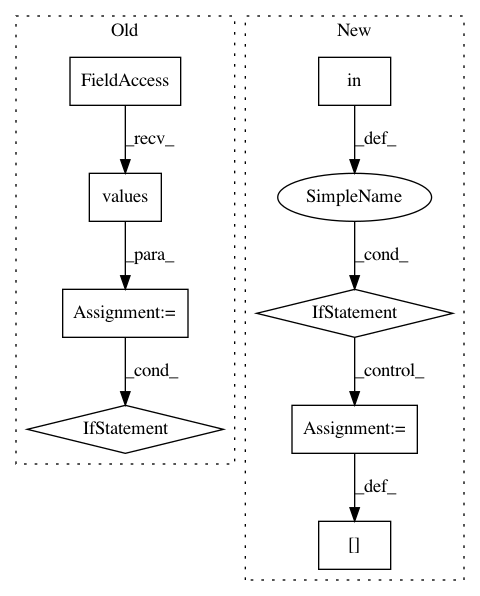

dd0ee4e2e8c9bd08d1f4300ce6d92d798beaa1b1,python/src/nnabla/utils/load.py,,load,#Any#Any#Any#Any#Any#Any#,824
Before Change
opti_proto_dict = {}
for o in opti_proto.optimizer:
opti_proto_dict[o.name] = o
for o in info.optimizers.values():
if o.name in opti_proto_dict:
o.solver.set_states_from_protobuf(opti_proto_dict[o.name])
info.monitors = _monitors(
proto, default_context, info.networks, info.datasets)
info.executors = _executors(proto, info.networks)
After Change
nn.load_parameters(f, extension=ext)
else:
logger.info("Skip loading parameter.")
elif ext in OPTI_BUF_EXT:
buf_type = get_buf_type(name)
if buf_type == "protobuf":
with nnp.open(name, "r") as f:
with get_file_handle_load(f, ".protobuf") as opti_p:
opti_proto.MergeFromString(
opti_p.read())
elif buf_type == "h5":
nnp.extract(name, tmpdir)
opti_h5_files[name] = os.path.join(
tmpdir, name)
default_context = None
if proto.HasField("global_config"):
info.global_config = _global_config(proto)
In pattern: SUPERPATTERN
Frequency: 3
Non-data size: 8
Instances
Project Name: sony/nnabla
Commit Name: dd0ee4e2e8c9bd08d1f4300ce6d92d798beaa1b1
Time: 2020-06-22
Author: 46014028+TE-ShiyuYang@users.noreply.github.com
File Name: python/src/nnabla/utils/load.py
Class Name:
Method Name: load
Project Name: reinforceio/tensorforce
Commit Name: 7deceb39597ea90e0f130448cf3616f0875b7f91
Time: 2017-10-28
Author: aok25@cl.cam.ac.uk
File Name: tensorforce/models/q_naf_model.py
Class Name: QNAFModel
Method Name: tf_regularization_losses
Project Name: reinforceio/tensorforce
Commit Name: 0e6f7cea4abae753c8e496bbbe6465af6818ad92
Time: 2017-10-28
Author: aok25@cl.cam.ac.uk
File Name: tensorforce/models/distribution_model.py
Class Name: DistributionModel
Method Name: tf_regularization_losses